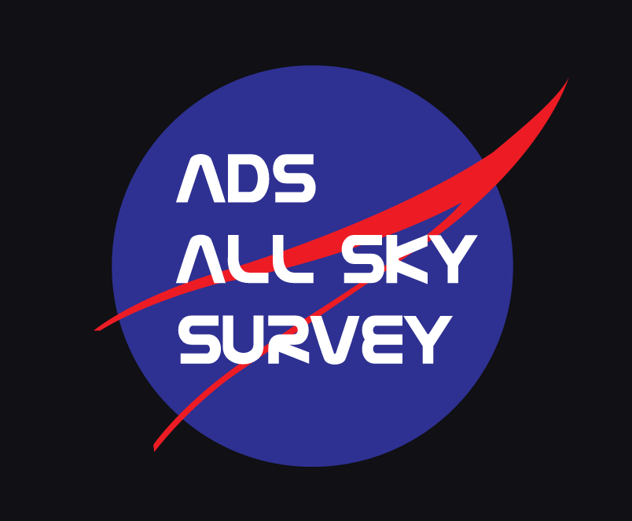

The ADS All Sky Survey (ADSASS), a NASA-funded collaboration, visualizes which astronomical sources are studied the most frequently, as judged by mentions in scientific journals. The ADSASS gives a heatmap across the sky, with frequently studied regions appearing brighter (or “hotter”) than less frequently studied regions. WorldWide Telescope allows the user to easily browse this dataset in a “Sky” view, to find interesting areas of study.